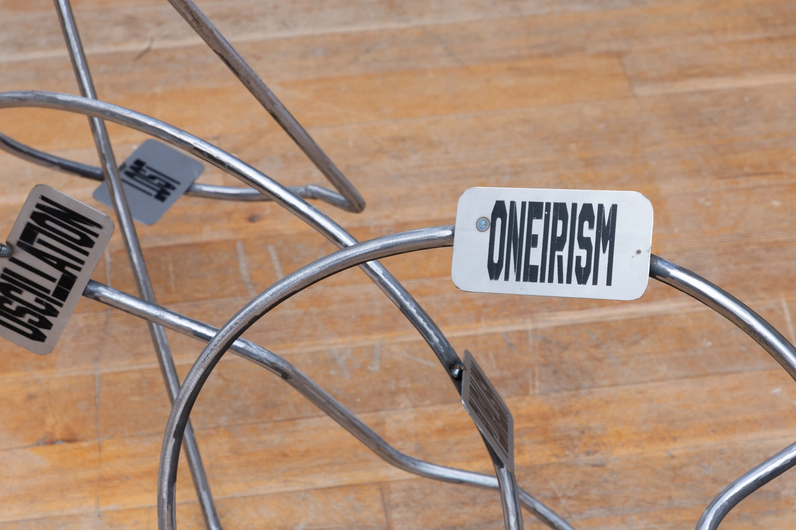
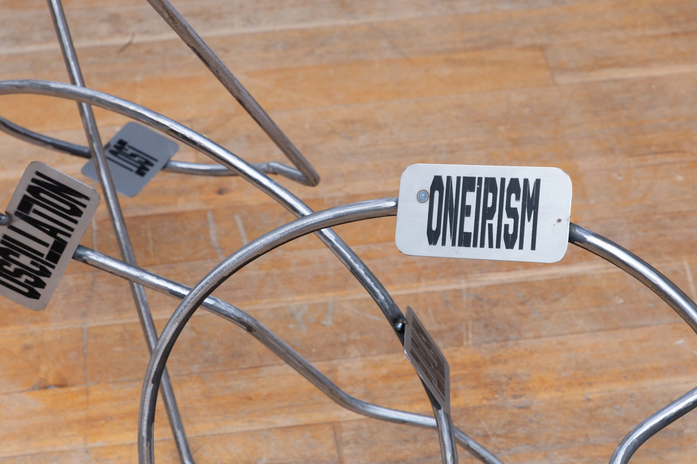

Armand Demulder
Erasmus Sacred
metal, paint, 200×300×80 cm
How does the Erasmus exchange program bring about a cultural and identity transformation (personal and professional)? It all starts with a familiar structure, an established form, my starting point. France, my comfort zone. A defined space, with precise contours, where everything is known and mastered. Then comes the leap into the unknown. The structure breaks down, bends, intertwines.The language changes, the environment is transformed, faces multiply and landmarks fade. A period of exploration and instability, when everything seems to be rebuilt. Little by little, a transition takes place. The sculpture, chaotic at first, begins to find its rhythm. It evolves, seeking a balance between what it was and what it is becoming.There's something dreamlike about this adaptation, a movement between loss and wonder. Then accommodation sets in, adaptation becomes strength.The foreign becomes the familiar.Then the form rises, carried by this transformation. More fluid, freer. Like an impulse towards a new 'me'. For this experience, beyond learning, offers an unexpected power: that of breaking the straight line of the 'ordinary' to soar towards the unknown, towards the sky.There's something sacred about Erasmus. It's a suspended moment, a rite of passage that must be honoured. An immense opportunity, an open door to another version of yourself.